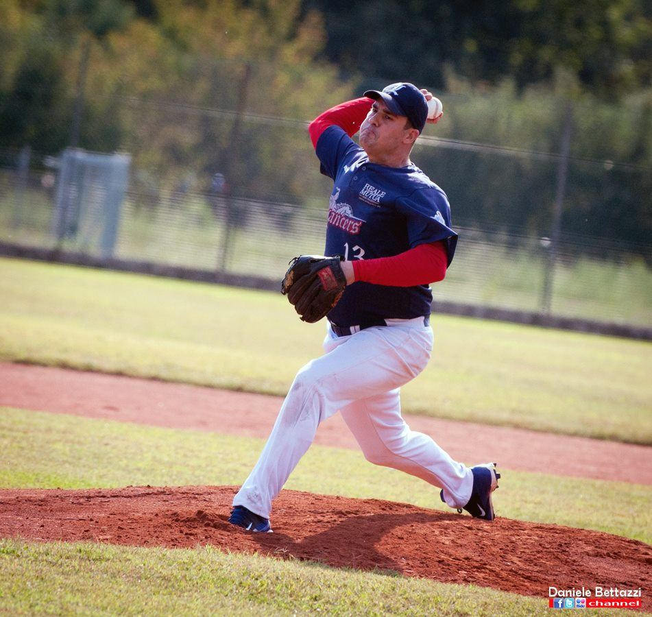

In questo articolo vi terremo aggiornati live per chi non riuscirà a passare dal campo, speriamo comunque di vedervi numerosi a tifare Lancers!
Ore 14.00: Il lineup lastrigiano inizia il proprio batting practice
Ore 14.30: E’ il turno dei friulani che si apprestano a riscaldarsi con le mazze
Ore 15.30: Si inizia, i Lancers in difesa schierano la batteria Ciappi-Becattini, in prima base Diaz, seconda base Pistol, terza base Baratella, interbase Degl’Innocenti.
Il trio esterno è composto da Nerbini, Geri e Graceffa, DH Albano.
1° inning: Nonostante le basi piene i White Sox non concretizzano, bel K di Ciappi che chiude la difesa. I Lancers non producono punti, nessun battitore arriva in base.
2° inning: E’ ancora Ciappi che domina le mazze friulane, zero punti entrati. I lancieri si portano in vantaggio con Albano che viene spinto a casa da Becattini su una rimbalzante in diamante.
3° inning: Ancora 0-1 alla fine del terzo inning, niente di fatto per entrambe le squadre.
4° inning: Sono ancora i lanciatori a dominare la scena, forte equilibrio tra le due squadre. Risultato fermo sullo 0-1 per i padroni di casa.
5° inning: Ciappi continua la sua ottima prestazione a suon di K senza rischiare molto, i Lancers si fanno pericolosi con Becattini in seconda che però non viene portato a casa dai compagni.
6° inning: Supportato da una difesa perfetta si chiude ancora a zero l’attacco friulani. Anche Di Mattia per il Buttrio non concede niente ai padroni di casa.
7° inning: Continua la cavalcata di Ciappi che esce ottimamente da una situazione difficile grazie ad uno strikeout ed un colto rubando di Becattini. I Lancers si fanno pericolosi mettendo con zero out uomo in prima e seconda ma ancora una volta non concretizzano.
8° inning: Il Buttrio si fa pericoloso in questo inning mettendo l’uomo in seconda e terza ma con grande esperienza Ciappi ne esce indenne. I lastrigiani segnano un punto grazie a Geri che, arrivato in prima su un errore avversario, raggiunge casa base su una sequenza di distrazioni difensive del Buttrio.
9° inning: Grazie ad un immenso Ciappi (autore di 14 K) ed una difesa ai limiti della perfezione i Lancers vincono gara 3 con il punteggio di 2-0…SI GIOCA ANCHE DOMANI!!!
ANDIAMO!!!